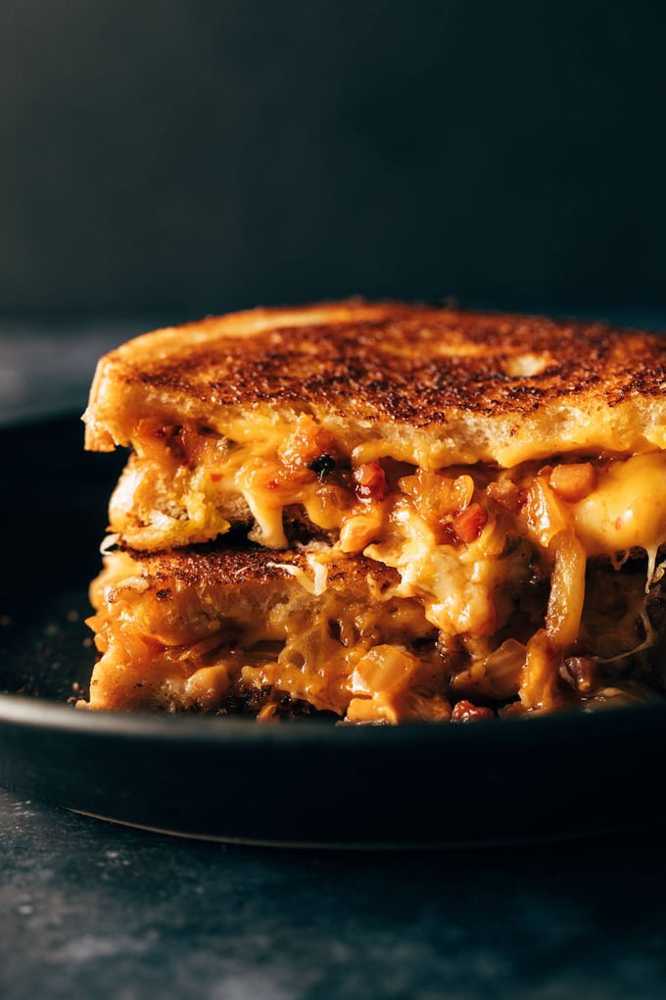

Kimchi Grilled Cheese

Description
Golden brown, pan-fried Kimchi Grilled Cheese is on the menu! Melty cheese with a caramelized kimchi and bacon filling sit between two thick slices of sourdough bread. Yum, friends. YUM!
Thick, crispy, golden brown pan-grilled slices of sourdough. The meltiest of melty cheeses, two kinds because we mean it. An exquisitely caramelized, smoky spicy-sweet, almost jammy kimchi and bacon filling. Lordy loo, an adventure awaits you too!
Ingredients
- sourdough
- American (so melty!) and gruyere cheeses
- butter (or mayo if you go that route with your grilled cheese-ing)
- kimchi
- bacon
- brown sugar
Steps
- Cook the bacon in a large pan over medium high heat until crisped and fat is rendered. Add the kimchi to the pan with the brown sugar. Pan fry for a few minutes, leaving it undisturbed for a few minutes at a time so it dries out and gets a little bit caramelized. Season with black pepper. Transfer to a bowl and wipe the pan clean.
- Layer your sandwiches: a slice of sourdough, two slices gruyere cheese, kimchi mixture, two slices American cheese, and a second slice of sourdough. Spread butter or mayo over the top and bottom of the sandwich.
- Heat the same skillet to medium heat; add the sandwich and cook for a few minutes on each side until golden brown. Cut and serve. Magic.